25 de octubre de 2026 · Entorno de desarrollo
Datos ficticios · Gemini y Gmail simulados · MySQL real
Este informe describe resultados observados; no acredita calidad jurídica ni entrega real de correo.
Versión evaluada: 740e50b02066b1620637e3c7d651095823d2026b.
22 pruebas unitarias: aprobadas, 0 fallidas. Nueve grupos de integración: aprobados. Once comprobaciones en navegador: aprobadas. Compilación: completada. Excepciones JavaScript detectadas en el recorrido: 0.
Los niveles de verificación tienen distinta granularidad; sus cantidades no representan una sola muestra estadística.
Node.js 24.19.0, MySQL 8.4.13, Vite 6.4.5, Playwright 1.62.1 y Chromium 154.0.8037.57 en Linux. Escritorio de 1440 × 1000 px; cliente móvil de 390 × 844 px. Aplicación y persistencia reales; respuestas externas controladas. No hubo llamadas a Google Gemini ni mensajes a Gmail real.
Se probó un caso ficticio desde el formulario hasta el cierre. Las cuentas y registros temporales se eliminaron al finalizar. Los enlaces privados están ocultos en las capturas.
No se midió el procedimiento manual, ahorro de tiempo, precisión del modelo, carga ni usabilidad con abogados. Estas pruebas no sustituyen una auditoría de seguridad ni demuestran funcionamiento en otra instalación.
| ID / prueba | Resultado esperado | Resultado observado | Estado |
|---|---|---|---|
| UI-01 · Recepción de consulta y PDF | La consulta y el PDF se guardan y se confirma el número de caso. | Formulario real del navegador; PDF generado para esta prueba, persistido en MySQL. | APROBADA |
| UI-02 · Clasificación y asignación automática | La categoría Laboral se refleja y el algoritmo asigna la abogada disponible. | Respuesta Gemini simulada Laboral; algoritmo real asignó la abogada disponible. | APROBADA |
| UI-03 · Visualización del análisis documental | El equipo puede leer resumen, hallazgos con páginas, fechas y advertencias. | Resumen, hallazgos con página, fechas y advertencias mostrados; contenido Gemini simulado. | APROBADA |
| UI-04 · Aclaración y notificación | La solicitud se guarda y la notificación usa el correo del caso. | Solicitud real registrada y envío aceptado por SMTP simulado. Enlace oculto en captura; no hubo correo real. | APROBADA |
| UI-05 · Respuesta del cliente y retorno a evaluación | El cliente responde una vez y el mismo caso vuelve a evaluación. | Respuesta privada guardada en el mismo caso; vista de 390 px sin desbordamiento horizontal. | APROBADA |
| UI-06 · Consulta de dos versiones de evaluación | Las revisiones 1 y 2 conservan sus textos y pueden abrirse sin editar. | Guardados desde la interfaz; cada revisión mantiene sus fundamentos y respuesta. Solo lectura. | APROBADA |
| UI-07 · Consulta de dos versiones de análisis Gemini | El análisis inicial y el posterior se pueden abrir tras reanalizar. | Dos respuestas simuladas distintas; ambas copias siguen disponibles después de reanalizar. | APROBADA |
| UI-08 · Aprobación y notificación de respuesta | La aprobación bloquea la edición y permite notificar la respuesta. | Evaluación bloqueada tras aprobación; registro real de aceptación SMTP simulada, sin entrega a Gmail real. | APROBADA |
| UI-09 · Respuesta privada final y cierre | El cliente ve solo respuesta/importe aprobados y la atención queda cerrada. | Cliente ve respuesta e importe aprobados, sin notas internas; caso queda cerrado. | APROBADA |
| UI-10 · Permisos de Soporte y abogado no asignado | Soporte no ve evaluaciones; un abogado ajeno no ve el caso. | Soporte no ve evaluaciones ni sus versiones; otro abogado no ve el caso. | APROBADA |
| UI-11 · Errores JavaScript del recorrido | El recorrido no produce excepciones JavaScript en las páginas. | Cero excepciones pageerror en las páginas del recorrido. Recursos externos del navegador bloqueados. | APROBADA |
| Grupo | Alcance | Estado |
|---|---|---|
| documents | Validación, descarga privada y conservación de documentos | APROBADA |
| clarifications | Aclaraciones, enlaces de un uso y concurrencia | APROBADA |
| evaluations | Borradores, aprobación, estados y privacidad | APROBADA |
| assignment | Asignación por especialidad, carga y disponibilidad | APROBADA |
| Vista previa, aceptación/fallo SMTP simulado y duplicados | APROBADA | |
| roles | Permisos por rol y acceso a casos/documentos | APROBADA |
| password | Cambio/restablecimiento y revocación de sesiones | APROBADA |
| history | Actores, metadatos, rollback y paginación | APROBADA |
| versions | Versiones, contenido vigente y migración repetible | APROBADA |
Los registros de ejecución, matriz CSV, JSON y guía de reproducción acompañan este PDF en la carpeta del informe.
Preparación: se corrigió una colisión de correos temporales del ejecutor antes de la ejecución final. No fue necesario modificar el código funcional de la aplicación.
Probar con los proveedores reales en condiciones controladas; definir una comparación con el proceso manual y registrar tiempos con una metodología consistente. Para la tesis: presentar esta ejecución como validación funcional con datos ficticios y proveedores simulados.
Formulario real del navegador; PDF generado para esta prueba, persistido en MySQL.
evidencias/01-recepcion.png · Captura del recorrido automatizado. Datos ficticios y proveedores simulados.
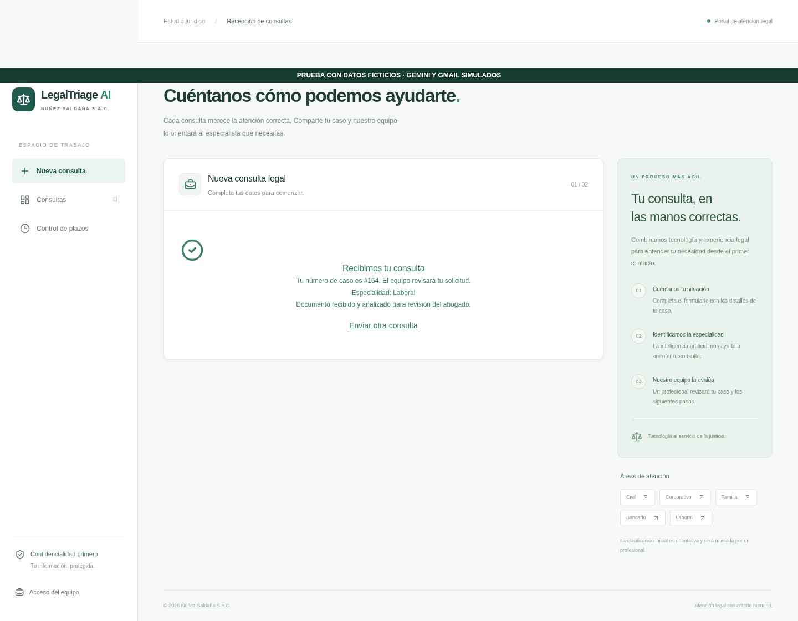
Respuesta Gemini simulada Laboral; algoritmo real asignó la abogada disponible.
evidencias/02-asignacion.png · Captura del recorrido automatizado. Datos ficticios y proveedores simulados.
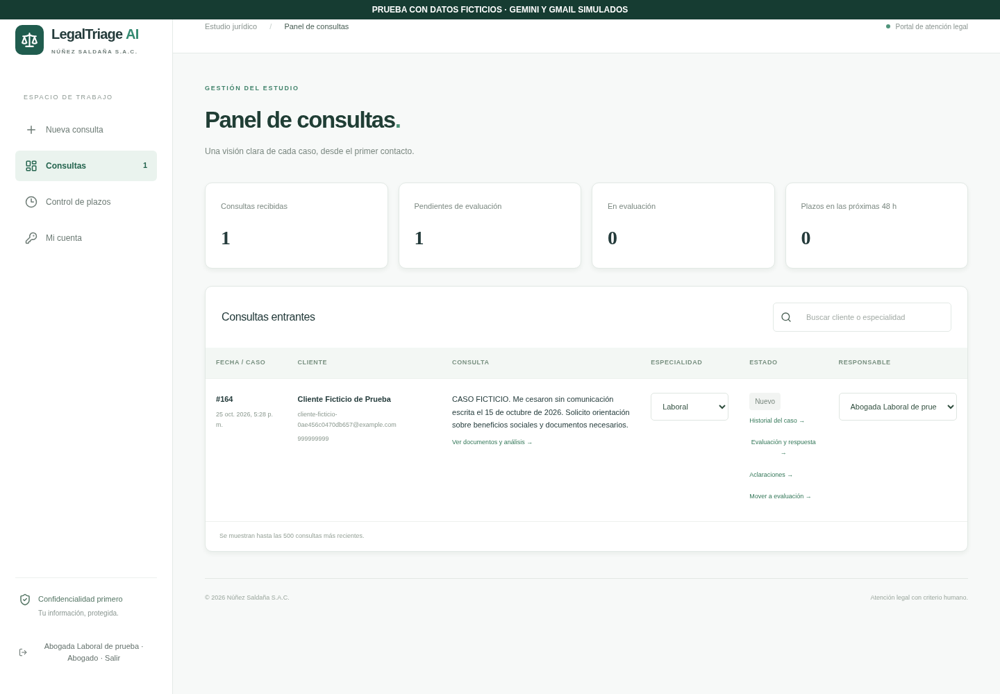
Resumen, hallazgos con página, fechas y advertencias mostrados; contenido Gemini simulado.
evidencias/03-analisis-inicial.png · Captura del recorrido automatizado. Datos ficticios y proveedores simulados.
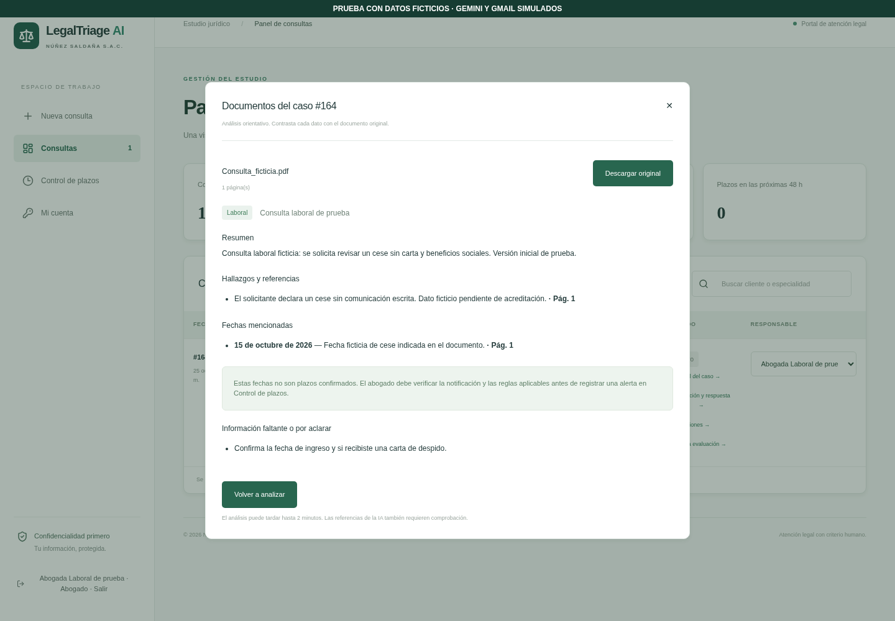
Solicitud real registrada y envío aceptado por SMTP simulado. Enlace oculto en captura; no hubo correo real.
evidencias/04-aclaracion-correo.png · Captura del recorrido automatizado. Datos ficticios y proveedores simulados.
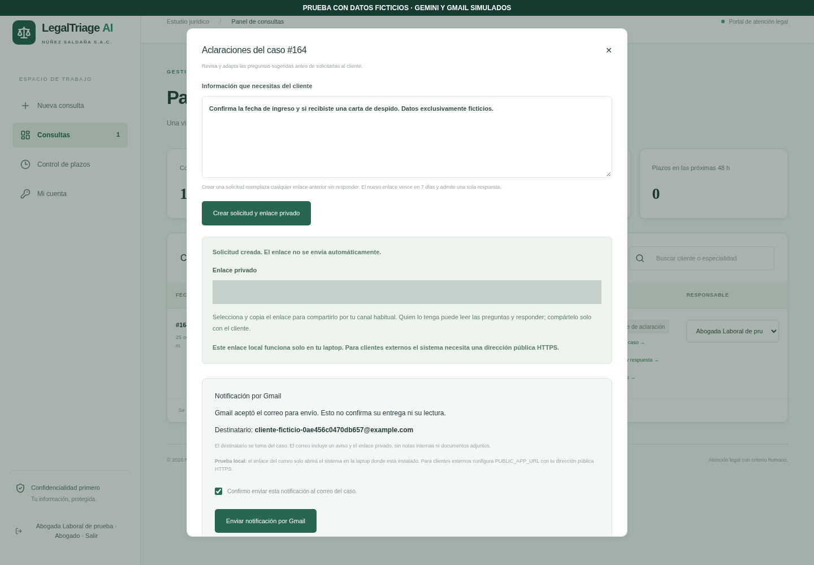
Respuesta privada guardada en el mismo caso; vista de 390 px sin desbordamiento horizontal.
evidencias/05-respuesta-cliente-movil.png · Captura del recorrido automatizado. Datos ficticios y proveedores simulados.
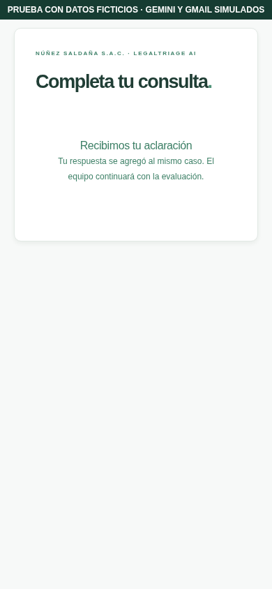
Guardados desde la interfaz; cada revisión mantiene sus fundamentos y respuesta. Solo lectura.
evidencias/06-evaluaciones-versiones.png · Captura del recorrido automatizado. Datos ficticios y proveedores simulados.
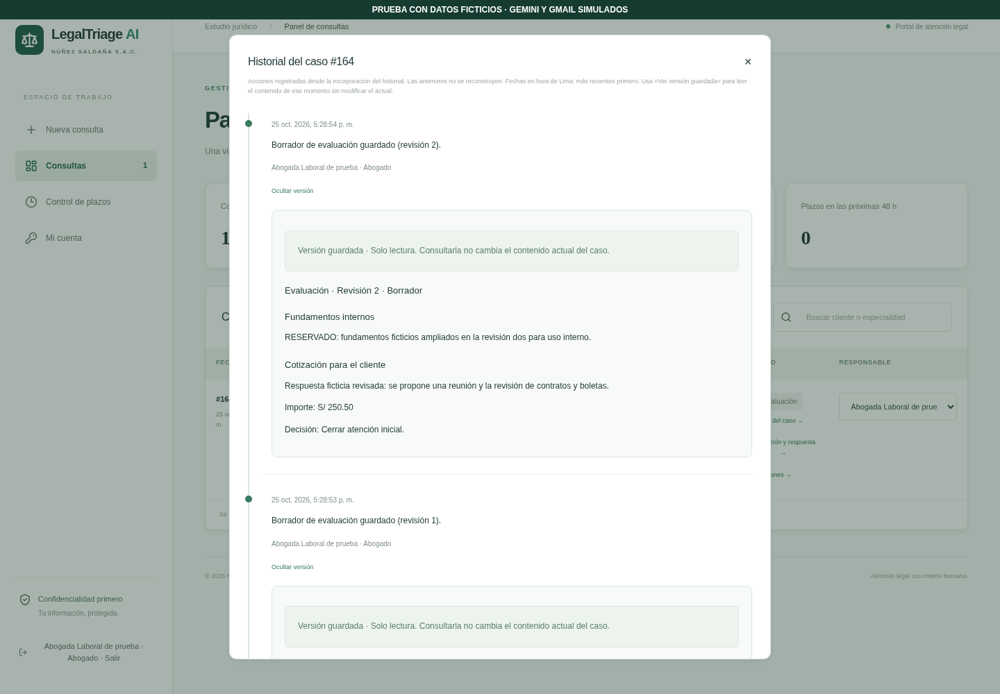
Guardados desde la interfaz; cada revisión mantiene sus fundamentos y respuesta. Solo lectura.
evidencias/06a-evaluacion-anterior.png · Captura del recorrido automatizado. Datos ficticios y proveedores simulados.
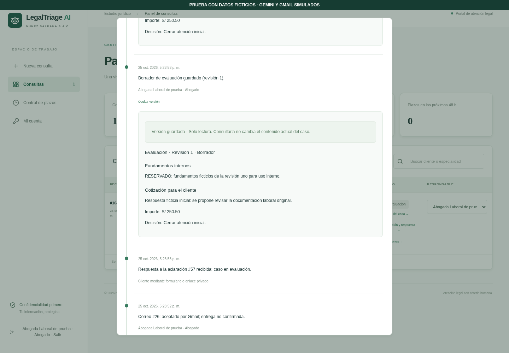
Dos respuestas simuladas distintas; ambas copias siguen disponibles después de reanalizar.
evidencias/07-analisis-versiones.png · Captura del recorrido automatizado. Datos ficticios y proveedores simulados.
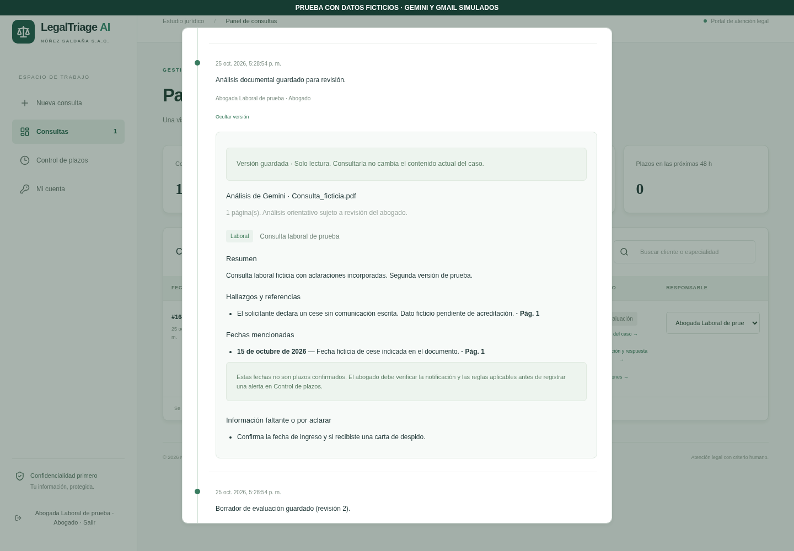
Dos respuestas simuladas distintas; ambas copias siguen disponibles después de reanalizar.
evidencias/07a-analisis-anterior.png · Captura del recorrido automatizado. Datos ficticios y proveedores simulados.
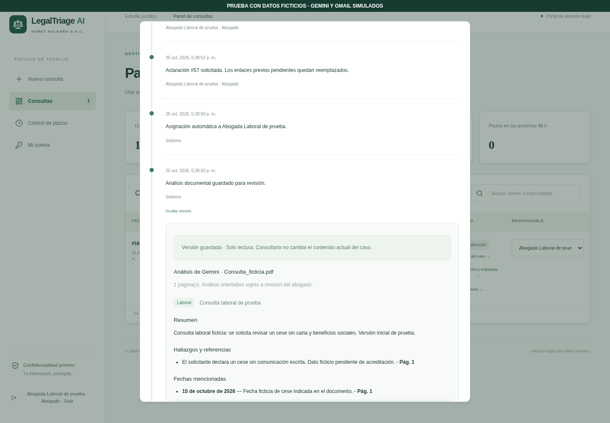
Evaluación bloqueada tras aprobación; registro real de aceptación SMTP simulada, sin entrega a Gmail real.
evidencias/08-aprobacion-notificacion.png · Captura del recorrido automatizado. Datos ficticios y proveedores simulados.
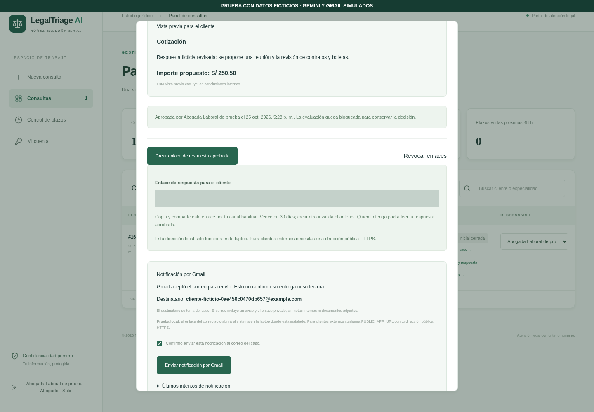
Cliente ve respuesta e importe aprobados, sin notas internas; caso queda cerrado.
evidencias/09-respuesta-final-movil.png · Captura del recorrido automatizado. Datos ficticios y proveedores simulados.
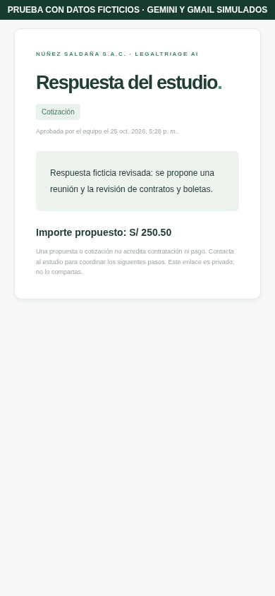
Soporte no ve evaluaciones ni sus versiones; otro abogado no ve el caso.
evidencias/10-permisos-soporte.png · Captura del recorrido automatizado. Datos ficticios y proveedores simulados.
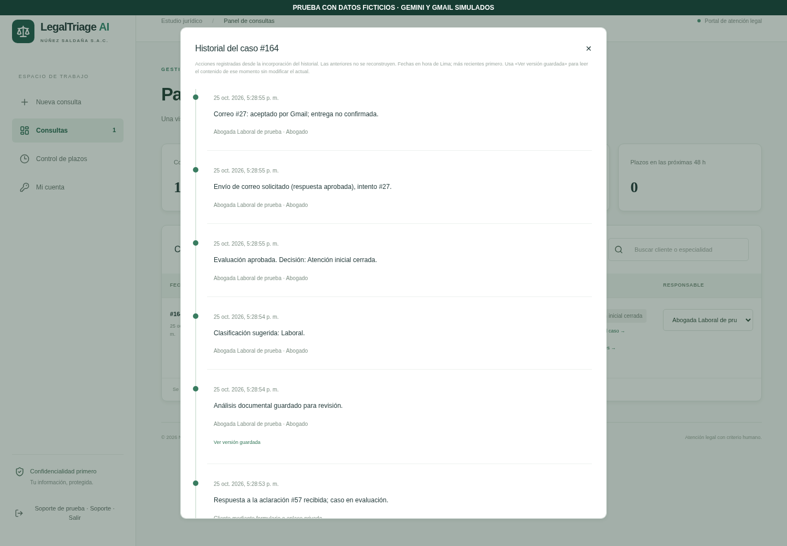